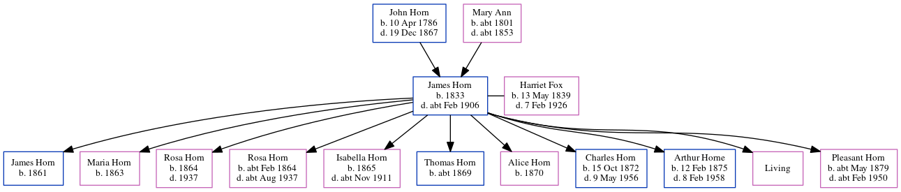

James Horn 1833 - c1906
[ Home ] | [ Calendar ] | [ Surnames Index ] | [ Errors ] | [ Family History ]A brewer's labourer and the child of John Horn (a labourer) and Mary Ann, James Horn, the three times great-uncle of Nigel Horne, was born in Margate, Kent, England in 18331,2,3,4,5,6,7,8, was baptised there at St John The Baptist Church on 17 Feb 1833 and also married Harriet Fox (with whom he had 11 children: James, Maria L, Rosa Louisa, Rosa Louisa, Isabella, Thomas G, Alice, Charles, Arthur Albert, Emily and Pleasant Alice, along with 1 surviving child) there at St John the Baptist Church on 21 Apr 18609.
During his life, he was living at Chapel Hill in Margate on 6 Jun 184112 and on 30 Mar 18512; at Hertford Place, Ramsgate, Kent, England on 2 Apr 187111; at Chapel Road, St Lawrence, Thanet, Kent on 3 Apr 18815; in Ramsgate in 18916; and at Addington Street in Ramsgate on 31 Mar 19014 - less than a mile from his great-nephew Isaac Horne who was living at 15 Haine Cottages, St Lawrence, Thanet, Kent, his great-nephew Charles Horne, great-nephew Edmund Horne and nephew Charles Horn who were living at 15 Haine Cottages, St Lawrence, Thanet, Kent -, his niece Caroline who was living at 3 Elms Park Terrace in Ramsgate - and his brother William who was living at 62 Boundary Road in Ramsgate -.
He died c. Feb 1906 in Thanet, Kent, England8.
Parents
- John was born on 10 Apr 1786
- Mary Ann was born c. 1801
Children
- James was born in 1861
- Maria L was born in 1863
- Rosa Louisa was born in 1864
- Rosa Louisa was born c. Feb 1864
- Isabella was born in 1865
- Thomas G was born c. 1869
- Alice was born in 1870
- Charles was born on 15 Oct 1872
- Arthur Albert was born on 12 Feb 1875
- Pleasant Alice was born c. May 1879
Citations
- 1841 England Census Online publication - Provo, UT, USA: The Generations Network, Inc., 2006.Original data - Census Returns of England and Wales, 1841. Kew, Surrey, England: The National Archives of the UK (TNA): Public Record Office (PRO), 1841. Data imaged from the National
- 1851 England Census Online publication - Provo, UT, USA: The Generations Network, Inc., 2005.Original data - Census Returns of England and Wales, 1851. Kew, Surrey, England: The National Archives of the UK (TNA): Public Record Office (PRO), 1851. Data imaged from the National (Relation to Head of House: Son)
- 1851 England, Wales & Scotland Census - Findmypast (was age 18 and the son of the head of the household)
- 1881 England Census Online publication - Provo, UT, USA: The Generations Network, Inc., 2004. 1881 British Isles Census Index provided by The Church of Jesus Christ of Latter-day Saints © Copyright 1999 Intellectual Reserve, Inc. All rights reserved. All use is subject to the (Marital Status: Married; Relation to Head of House: Head)
- 1881 England, Wales & Scotland Census - Findmypast (was age 48 and the head of the household)
- 1891 England Census Online publication - Provo, UT, USA: The Generations Network, Inc., 2005.Original data - Census Returns of England and Wales, 1891. Kew, Surrey, England: The National Archives of the UK (TNA): Public Record Office (PRO), 1891. Data imaged from The National (Relation to Head of House: Head)
- 1901 England Census Online publication - Provo, UT, USA: The Generations Network, Inc., 2005.Original data - Census Returns of England and Wales, 1901. Kew, Surrey, England: The National Archives of the UK (TNA): Public Record Office (PRO), 1901. Data imaged from the National
- England & Wales deaths 1837-2007 - Findmypast
- Kent Marriages And Banns - Findmypast
- 1901 England, Wales & Scotland Census - Findmypast (was age 67 and the head of the household)
- 1871 England, Wales & Scotland Census - Findmypast (was age 34 and the head of the household)
- 1841 England, Wales & Scotland Census - Findmypast (was age 7 and the son of the head of the household)
Notes
Worked as a gardener and drayman for Tomson and Wotton. Fell off the dray 1897, compound fracture of leg.
Media
England & Wales deaths 1837-2007 - BMD/D/1906/1/AZ/000183/286
England Births & Baptisms 1538-1975 - R_884641137
Kent Baptisms - GBPRS/CANT/B/96008942
Kent Baptisms - GBPRS/CANT/B/96217909
1841 England, Wales & Scotland Census - GBC/1841/0013957364
Family Tree
Map
Generated by ged2site. Last updated on Jul 3, 2024
Known Issues
Date of baptism (17 Feb 1833) before date of birth (1833)
Location for 1841 (Chapel Hill, Margate, Kent, England) differs from mother's (Margate, Kent, England)
Date of residence (6 Jun 1841) differs from mother's in same year (1841)
Listed in the residence for 1891, but spouse Harriet Fox is not
Census information missing between Census UK 1851 and Census UK 1871